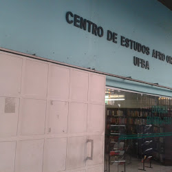
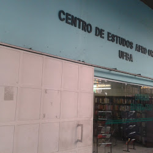
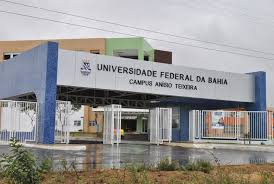
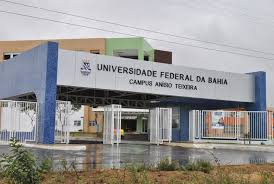
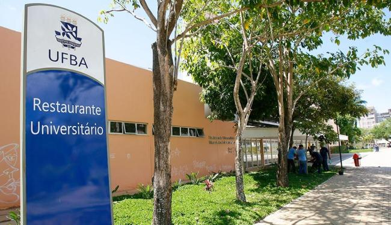
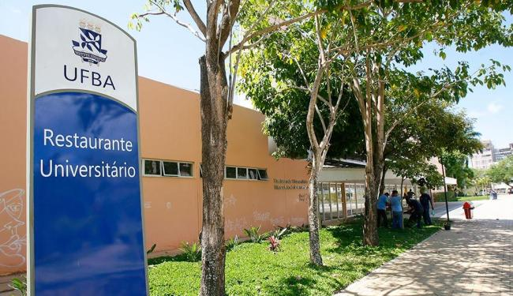

Assistência estudantil
Bibliotecas
A UFBA dispõe de 22 (vinte e duas) bibliotecas que oferecem empréstimos gratuitos de material bibliográfico aos estudantes da UFBA.

Biblioteca Universitária Reitor Macedo Costa
Abriga acervo do Instituto de Letras, Faculdade de Comunicação, Instituto de Humanidades, Artes e Ciências, Instituto de Biologia, Faculdade de Farmácia, Escola de Medicina Veterinária, Escola de Dança, além de coleções especiais.
Horário de funcionamento: segunda a sexta-feira, das 7:30h às 21:00h e sábado e domingo das 8:00h às 16:00h.
Endereço: Rua Barão de Jeremoabo, s/n, Campus Universitário de Ondina, 40170-290 - Salvador


Biblioteca Universitária de Exatas Omar Catunda
Abriga acervo acervo da área das ciências exatas – Matemática, Estatística, Ciência da Computação, Física e Química - e também o acervo de Geociências.
Horário de funcionamento: segunda a sexta-feira, das 7:30h às 21:00h.
Endereço: Rua Barão de Jeremoabo, s/n, 40170-290 - Salvador.

Biblioteca Universitária de Saúde Prof. Álvaro Rubim de Pinho
Abriga acervo da Escola de Enfermagem, Escola de Nutrição, Faculdade de Medicina, Faculdade de Odontologia, Instituto de Ciências da Saúde, Instituto de Saúde Coletiva e do Hospital Universitário Prof. Edgard Santos.
Horário de funcionamento: segunda a sexta-feira, das 7:30h às 21:00h e sábado das 8:00h às 16:00h.
Endereço: Rua Basílio da Gama, s/n, Canela, 40110-907 - Salvador
Biblioteca Universitária Isaías Alves
Abriga acervo da Faculdade de Filosofia e Ciências Humanas e do Instituto de Psicologia.
Horário de funcionamento: segunda a sexta-feira, das 8:00h às 17:00h.
Endereço: Estrada de São Lázaro, no 197, Federação, 40210-630 - Salvador.
Tel.: (71) 3283-6438
E-mail: bsfch@ufba.br
Biblioteca Universitária Bernadeth Sinay Neves da Escola Politécnica
Horário de funcionamento: segunda a sexta-feira, das 8:00h às 22:00h e sábado, das 8:00h às 12:00h.
Endereço: Rua Aristides Novis, no 2, Federação, 40210-630 - Salvador.
Tel.: (71) 3283-9714/3283-9715/3283-9705
E-mail: bieng@ufba.br
Biblioteca Anísio Teixeira da Faculdade de Educação
Abriga acervo das áreas de Educação, Psicologia, Filosofia, Sociologia, Educação física, Esportes, Lazer.
Endereço: Av. Reitor Miguel Calmon, s/n, Campus Universitário do Canela, 40110-100 - Salvador.
Tel.: (71) 3283-7255/3283-7256
E-mail: biedu@ufba.br
Biblioteca da Escola de Administração
Abriga acervo da Escola de Administração.
Horário de funcionamento: segunda a sexta-feira, das 7:30h às 20:30h.
Endereço: Av. Reitor Miguel Calmon, s/n, Campus Universitário do Canela, 40110-100 - Salvador.
Tel.: (71) 3283-7636/3283-7337
E-mail: dortas@ufba.br


Biblioteca da Escola de Música
Abriga um acervo composto de livros, periódicos, partituras, discos de vinil, CDs e alguns DVDs.
Horário de funcionamento: segunda a sexta-feira, das 7:00h às 19:00h.
Endereço: Rua Basílio da Gama, s/n, Canela, 40160-060 - Salvador.
Tel.: (71) 3283-7909/3283-7910
E-mail: bibmus@ufba.br


Biblioteca da Faculdade de Economia
Abriga acervo dos cursos de Ciências Econômicas.
Horário de funcionamento: segunda a sexta-feira, das 7:00h às 19:00h.
Endereço: Praça da Piedade, no 6, Centro, 40070-010 - Salvador.
Tel.: (71) 3283-7587
E-mail: fcebibl@ufba.br

Biblioteca de Arquitetura
Abriga acervo dos cursos de Arquitetura e Urbanismo.
Horário de funcionamento: segunda a sexta-feira, das 8:00h às 22:00h.
Endereço: Rua Caetano Moura, no 121, Federação, 40210-350 – Salvador.
Tel.: (71) 3283-5888
E-mail: bibarq@ufba.br
Biblioteca do Centro de Estudos e Terapia do Abuso de Drogas – CETAD
Abriga acervo relacionado ao uso ou abuso de substâncias psicoativas.
Horário de funcionamento: segunda a sexta-feira, das 8:00h às 12:00h e das 14:00h às 18:00h.
Endereço: Rua Pedro Lessa, no 123 Canela, 40110-050 - Salvador.
Tel.: (71) 3336-3322/3336-5341
E-mail: bibliotecacetad@hotmail.com

Biblioteca do Instituto de Ciência da Informação
Abriga acervo dos cursos de Ciência da Informação.
Horário de funcionamento: segunda a sexta-feira, das 8:00h às 19:00h.
Endereço: Av. Reitor Miguel Calmon, s/n, Canela, 40110-100 - Salvador.
Tel.: (71) 3283-7757
E-mail: bibici@ufba.br
Biblioteca do Museu de Arte Sacra
Abriga acervo relativo a Religião, Arte, História, entre outros.
Horário de funcionamento: segunda a sexta-feira, das 11:30h às 17:00h.
Endereço: Rua do Sodré, no 276, Dois de Julho, 40060-240 - Salvador.
Tel.: (71) 3283-5604
E-mail: bibmas@ufba.br
Biblioteca Nelson de Araújo da Escola de Teatro
Horário de funcionamento: segunda a sexta-feira, das 8:00h às 19:00h.
Endereço: Rua Araújo Pinho, no 292, Canela, 40110-150 - Salvador.
Tel.: (71) 3283-7873
E-mail: bitea@ufba.br

 

Biblioteca do Centro de Estudo Afro-Oriental – CEAO
Horário de funcionamento: segunda a sexta-feira, das 8:00h às 19:00h.
Endereço: Praça General Inocêncio Galvão, no 42, Largo 2 de Julho, 40060-055, Salvador.
Tel.: (71) 3283-5515/3283-8628/3283-8630
E-mail: biceao@ufba.br
Biblioteca Shiguemi Fujimori do Instituto de Geociências
Abriga acervo das áreas de Geografia, Geologia, Oceanografia e Geofísica.
Horário de funcionamento: segunda a sexta-feira, das 8:00h às 21:00h.
Endereço: Instituto de Geociências, Rua Barão de Jeremoabo, s/n, 3o piso, Campus Universitário de Ondina, 40170-020 - Salvador.
Tel.: (71) 3283-8628/3283-8630
E-mail: bigeo@ufba.br
Biblioteca Sofia Olszewski Filha da Escola de Belas Artes
Horário de funcionamento: segunda a sexta-feira, das 8:00h às 19:00h.
Endereço: Av. Araújo Pinho, no 212, Canela, 40110-150 - Salvador.
Tel.: (71) 3283-7932
E-mail: bibeba@ufba.br


Biblioteca Teixeira de Freitas da Faculdade de Direito
Abriga acervo que abrange todas as áreas do direito.
Horário de funcionamento: segunda a sexta-feira, das 8:00h às 22:00h e sábado das 8:00h às 13:00h.
Endereço: Rua da Paz, s/n, 3o andar, Graça, 40150-140 - Salvador.
Tel.: (71) 3283-9059
E-mail: bidir@ufba.br

Biblioteca Professor Gonçalo Muniz e Memorial da Saúde Brasileira
Abriga extenso acervo das áreas de Medicina.
Horário de funcionamento: segunda a sexta-feira, das 8:00h às 17:00h.
Endereço: Largo Terreiro de Jesus Antiga Faculdade de Medicina, s/n, Pelourinho, 40026-010 - Salvador.
Tel.: (71) 3283-5575
E-mail: bibgm@ufba.br
Biblioteca Prof. José Bernardo Cordeiro Filho - Faculdade de Ciências Contábeis
Abriga acervo dos cursos de Ciências Contábeis.
Horário de funcionamento: segunda a sexta-feira, das 8:00h às 19:00h.
Endereço: Avenida Reitor Miguel Calmon, s/n, Vale do Canela, 40110-903 – Salvador.
Tel.: (71) 3283-8771
E-mail: bibcontabeis@ufba.br
Biblioteca do Campus Universitário Anísio Teixeira
Abriga acervo das áreas de atuação de cada curso do Campus.
Horário de funcionamento: segunda a sexta-feira, das 7:00h às 19:00h.
Endereço: Rua Rio de Contas, no 58, Candeias, 45029-094 - Vitória da Conquista.
Tel.: (71) 3429-2721
E-mail: bcat@ufba.br
 

Consulta ao acervo, reserva e renovação
Através do sistema PERGAMUM os estudantes podem consultar o acervo bibliográfico das bibliotecas, bem como a quantidade disponível de exemplares. Os estudantes, por meio do número de matrícula e senha, podem também verificar o histórico de empréstimo, a data de devolução, fazer renovações e acompanhar as reservas.
Residências universitárias
Modalidade de acesso a moradia em que a UFBA, através de aparato próprio ou sob contrato, gerencia espaços onde são assegurados, além da moradia, áreas comuns para estudos e convivência, durante o tempo médio do curso. As Residências Universitárias da UFBA, em Salvador/Ba, são distribuídas em 4 complexos de moradias estrategicamente localizas próximas dos campi da Universidade. A 1ª localizada no Corredor da Vitória, a segunda no Largo da Vitória,a terceira na Graça e a quarta na Avenida Anita Garibaldi.
Restaurantes universitários
O restaurante universitário da UFBA distribui refeições no período do almoço e da janta necessitando apenas apresentar o comprovante de matricula e pagar um valor de R$ 2,50. Porém, as refeições são limitadas e distribuídas por ordem de chegada. Sendo o número de fichas em torno de 400, é preciso chegar com certa antecedência para conseguir pegar a refeição. São oferecidas duas opções: vegetariana e tradicional.
Creche
Auxílio Creche
Estudantes em vulnerabilidade socioeconômica têm o direito ao Auxílio Creche que consiste em um auxílio para custeio de despesas com cuidado e serviço de educação infantil na faixa etária de 4 (quatro) meses a 3 (três) anos e 11 (onze) meses de idade. Os estudantes devem estar regulamente matriculados em curso de graduação e não podem ter vínculo empregatício.
 
 
Serviço Creche UFBA
A Creche UFBA é uma unidade vinculada à PROAE que atende crianças filhas de estudantes, servidores e professores da UFBA, com idades entre 4 (quatro) meses a 3 (três) anos e 11 (onze) meses. Constitui-se de um espaço de aprendizado que promove atividades educativas e culturais, contribuindo para o desenvolvimento educacional e psicológico da criança. A depender da idade*, as crianças são divididas nos seguintes grupos:
Berçário - 4 meses
Grupo 1 - 1 ano
Grupo 2 - 2 anos
Grupo 3 - 3 anos
* Idade da criança até março do ano atual
A comunicação entre a Creche UFBA e os pais é feita através de reuniões gerais, reuniões individualizadas (ou por pequenos grupos) e pela comissão de pais.
Horários de atendimento da Creche UFBA
Os horários da Creche UFBA obedecem ao calendário acadêmico e seu funcionamento ocorre de segunda a sexta-feira (exceto em feriados e pontos facultativos) e possui dois regimes:
integral - das 7 às 18 horas
parcial - das 7 às 13 horas no turno matutino ou das 13 às 18 horas no turno vespertino
Serviço Médico Universitário Rubens Brasil
O SMURB – Serviço Médico Universitário Rubens Brasil – foi criado em 1952 para atender os estudantes carentes, mas com a entrada do Doutor Rubens Brasil o serviço foi ampliado para os docentes, funcionários e seus respectivos familiares. Para ter acesso a este serviço o associado a UFBA tem de passar por uma triagem que é requisitada no momento de ingresso na universidade.
BUZUFBA


Os estudantes da UFBA podem contar com o serviço gratuito dos BUZUFBAS. A frota conta com cinco BUZUFBAS, dois que foram recentemente adicionados.
O BUZUFBA é o sistema de transporte intercampi da UFBA conquistado após a greve de 2012. É um serviço gratuito planejado para facilitar a locomoção dos estudantes que têm aulas nos diversos campi da UFBA em Salvador, visando diminuir o tempo de locomoção entre um campus e outro, além de evitar gastos com o transporte público podendo ser utilizado pela comunidade.
As variadas rotas perpassam os distribuídos campi com horários fixos. O serviço é bastante útil mas precisa ser melhorado em relação ao tamanho da frota e aos horários de modo que não haja superlotação.
Bolsas e auxílios
Auxílios financeiros
Alunos em vulnerabilidade socioeconômica, regulamente matriculados em curso de graduação da UFBA e que não possuam vínculo empregatício têm direito a vários auxílios financeiros.
Auxílio Moradia
Auxílio mensal destinado ao custeio de parte das despesas com moradia até a conclusão da primeira graduação. Os estudantes também terão garantidas duas refeições diárias no Restaurante Universitário e a opção de complementação financeira para custear até mais duas refeições diárias.
Auxílio Transporte
Auxílio mensal referente ao valor de 3 (três) meias-passagens de ônibus para seis dias semanais destinado ao custeio das despesas de deslocamento.
Auxílio a Pessoa com Necessidades Educativas Especiais
Auxílio mensal destinado à estudantes de graduação que apresentem deficiência física, intelectual ou sensorial (auditiva ou visual), transtornos globais do desenvolvimento e altas habilidades e superdotação. Os estudantes também terão a opção de complementação financeira para custear até duas refeições diárias.
Serviço de Alimentação
Garantia de duas refeições diárias realizadas no Restaurante Universitário.
Programa Permanecer
Destinado a estudantes em vulnerabilidade socioeconômica na universidade, visando assegurar a permanência bem-sucedida e garantindo a terminalidade dos estudos em nível de graduação.Para participar, o aluno deve submeter de projetos, para avaliação, em uma das áreas de Iniciação: Extensão,Ensino, Pesquisa ou Aprendizagens Profissionais.